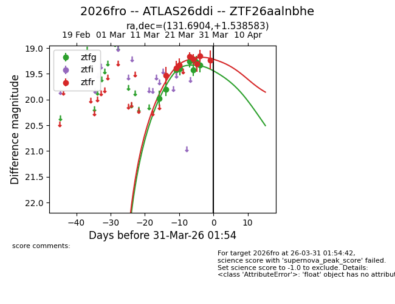
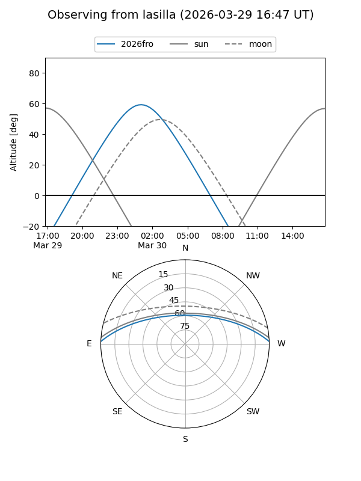
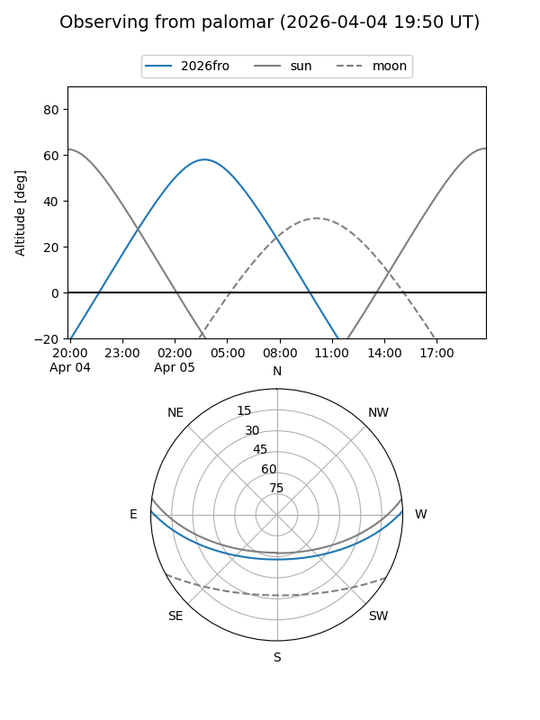
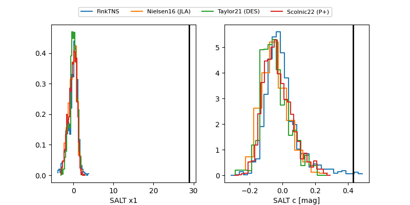

2026fro
Target 2026fro at 2026-03-31 01:58
Aliases and brokers:
FINK: link
Lasair: link
ALeRCE: link
TNS: link
YSE: link
alt names
ZTF26aalnbhe (ztf,fink_ztf)
2026fro (tns,yse)
ATLAS26ddi (atlas)
Coordinates:
equatorial (ra, dec) = 131.6904,+1.53858
equatorial (HMS+DMS) = 08:46:45.69,+01:32:18.90
galactic (l, b) = (225.5421,+26.18456)
Flags:
Photometry:
last ztfg=19.33, ztfr=19.23
8 ztfg, 8 ztfr detections
Lightcurve

Visibility


Additional plots
